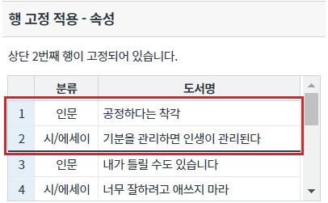
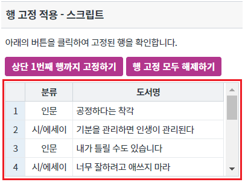
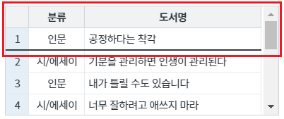
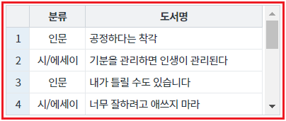
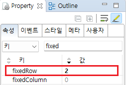
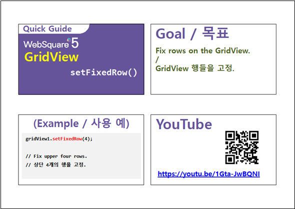

GridView의 행 고정 기능 예제입니다. 이 기능은 아래의 속성과 함수로 사용할 수 있습니다. - fixedRow : (속성) 행 고정 - setFixedRow : (함수) 행 고정
행 고정 적용 - 속성
행 고정 적용 - 스크립트
영역 [행 고정 적용 - 속성]의 GridView를 확인합니다.
상단에서 2번째 행이 고정되었습니다.
[브라우저(Chrome) 실행 예시]

영역 [행 고정 적용 - 스크립트]의 GridView를 확인합니다.
행 고정이 적용되지 않았습니다.
[브라우저(Chrome) 실행 예시]

버튼 상단 1번째 행까지 고정하기를 클릭합니다.
상단에서 1번째 행이 고정됩니다.
[브라우저(Chrome) 실행 예시]

버튼 행 고정 모두 해제하기를 클릭합니다.
고정된 행이 모두 해제됩니다.
[브라우저(Chrome) 실행 예시]

GridView의 속성을 정의합니다.
[필수] fixedRow="설정 값" //상단에서 고정할 행의 위치
예시) fixedRow="1" //상단에서 1번째 행을 고정
그림 1.웹스퀘어5 SP5 스튜디오의 Property View(속성창) 예시

[소스 코드 예시]
<!-- gridView 의 소스 본문 예시 --> <w2:gridView fixedRow="1" dataList="data:dlt_books" style="height: 100px;"> <!-- 중략 --> </w2:gridView>
GridView의 함수 setFixedRow 을 사용합니다.
[소스 코드 예시]
//예제 파일의 스크립트 "scwin.btn_ex1_1_onclick", "scwin.btn_ex1_2_onclick"을 참고하세요. //GridView 'grd_exam2'의 상단 1번째 행까지 고정하기 grd_exam2.setFixedRow(1); //GridView 'grd_exam2'의 행 고정 해제하기 grd_exam2.setFixedRow(0);
fixedRow
setFixedRow( fixedRowNum )
[웹스퀘어5 SP5 개발 가이드] GridView
링크 : https://docs1.inswave.com/sp5_user_guide/bc10c1b82c9a2a0b#e1c4658baf7e726f
[웹스퀘어5 SP5 개발 가이드] GridView 행 고정
링크 : https://docs1.inswave.com/sp5_user_guide/86bdcf48029b958b#aae95a44c362f42b
GridView GridView 고정
링크 : https://youtu.be/1Gta-JwBQNI
